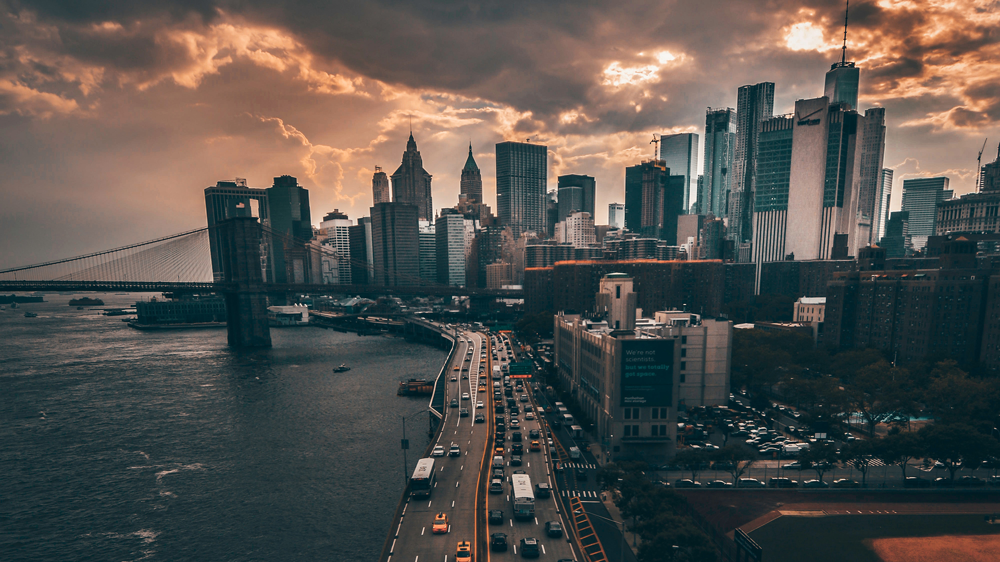
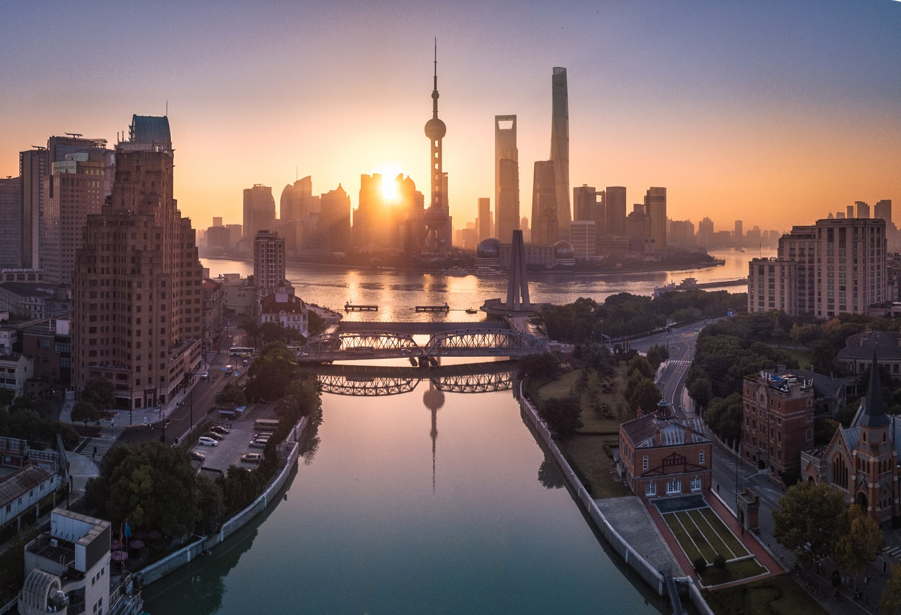
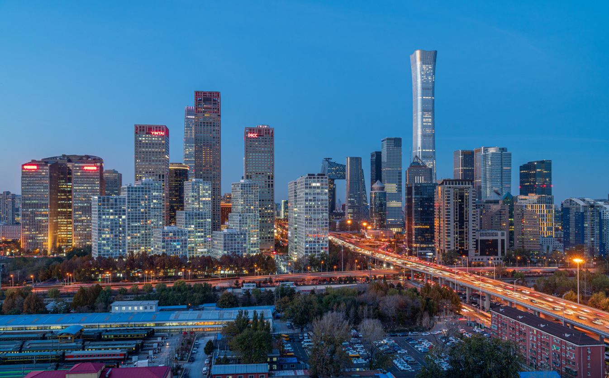
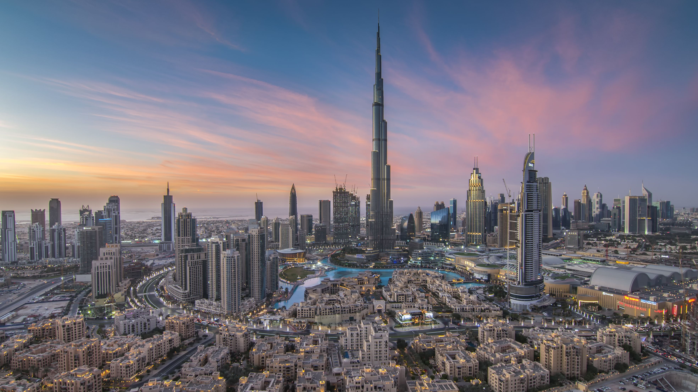

The City That Never Sleeps
New York City
New York City is a global cultural, financial, and media center with a significant influence on commerce,
entertainment, research, technology, education, politics, tourism, dining, art, fashion, and sports.
New York is the most photographed city in the world. Home to the headquarters of the United Nations,
New York is an important center for international diplomacy, an established safe haven for global investors, and is sometimes described as the capital of the world.

Tokyo Tokyo Old meets New
Tokyo
Tokyo is the largest urban economy in the world by gross domestic product, and is categorized as an Alpha city
by the Globalization and World Cities Research Network. Part of an industrial region that includes the cities of
Yokohama, Kawasaki, and Chiba, Tokyo is Japan's leading center of business and finance. As of 2021, it is home to 37
of the Fortune Global 500 companies. In 2020, it ranked fourth on the Global Financial Centres Index, behind New York City, London, and Shanghai.
Tokyo has the world's tallest tower, Tokyo Skytree, and the world's largest underground floodwater diversion facility, MAOUDC. The Tokyo Metro Ginza Line
is the oldest underground metro line in East Asia.

Non ducor, duco
São Paulo
São Paulo is a cosmopolitan, melting pot city, home to the largest Arab, Italian, Japanese, and Portuguese diasporas, with examples including ethnic neighborhoods
of Bixiga, Bom Retiro, and Liberdade. In 2016, inhabitants of the city were native to over 200 countries.The metropolis is also home to several of the tallest skyscrapers
in Brazil, including the Mirante do Vale, Edifício Itália, Banespa, North Tower and many others. The city has cultural, economic and political influence nationally and internationally.
It is home to monuments, parks and museums such as the Latin American Memorial, the Ibirapuera Park, Museum of Ipiranga, São Paulo Museum of Art, and the Museum of the Portuguese Language.

Together for a Shared Future
Beijing
Beijing is a global city and one of the world's leading centres for culture, diplomacy, politics, finance, business and economics, education, research, language, tourism, media, sport, science
and technology and transportation. A megacity, Beijing is the second largest Chinese city by urban population after Shanghai and is the nation's cultural, educational, and political center. It is
home to the headquarters of most of China's largest state-owned companies and houses the largest number of Fortune Global 500 companies in the world, as well as the world's four biggest financial
institutions by total assets. Beijing is the "billionaire capital of the world" with the highest number of billionaires living in the city. It is also a major hub for the national highway, expressway,
railway, and high-speed rail networks

Time to Say Dubai
Dubai
Dubai is the most populated city in the United Arab Emirates and the capital of the Emirate of Dubai, the most populated of the 7 monarchies which together form the United Arab Emirates. Established in the 18th century
as a small fishing village, the city grew rapidly in the early 21st century with a focus on tourism and luxury, having the second most five-star hotels in the world, and the tallest building in the world, the Burj Khalifa,
which is over a half a mile tall. In the eastern Arabian Peninsula on the coast of the Persian Gulf, it is also a major global transport hub for passengers and cargo. Oil revenue helped accelerate the development of the city,
which was already a major mercantile hub. A centre for regional and international trade since the early 20th century, Dubai's economy relies on revenues from trade, tourism, aviation, real estate, and financial services.